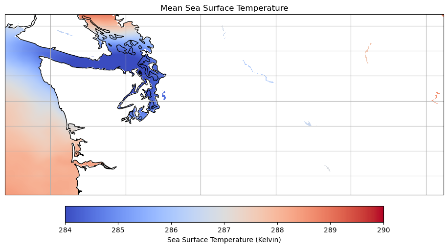
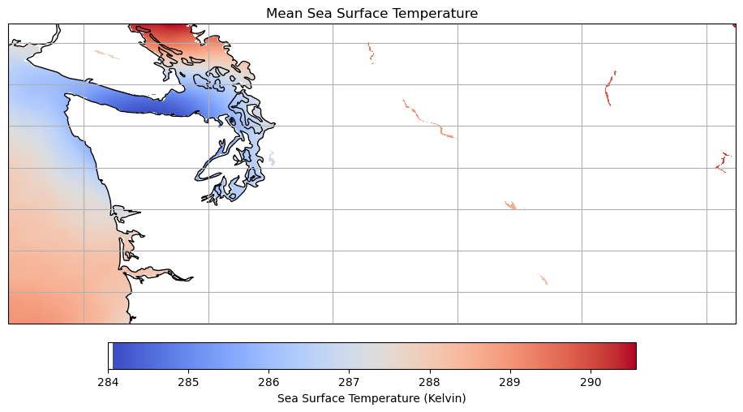

import h5netcdf
import xarray as xr
import numpy as np
import matplotlib.pyplot as plt
import hvplot.xarray
import cartopy.crs as ccrs
import cartopy.feature as cfeat
import earthaccess
from earthaccess import Auth, DataCollections, DataGranules, StoreMUR Sea Surface Temperature Analysis of Washington State
Accessing and Visualizing SWOT Simulated Datasets
Requirement:
- Compute environment
This tutorial can only be run in an AWS cloud instance running in us-west-2: NASA Earthdata Cloud data in S3 can be directly accessed via temporary credentials; this access is limited to requests made within the US West (Oregon) (code: us-west-2) AWS region.
- Earthdata Login
An Earthdata Login account is required to access data, as well as discover restricted data, from the NASA Earthdata system. Thus, to access NASA data, you need Earthdata Login. Please visit https://urs.earthdata.nasa.gov to register and manage your Earthdata Login account. This account is free to create and only takes a moment to set up.
Learning Objectives:
- Access cloud-stored MUR Global SST data within AWS cloud, without downloading it to your local machine
- Visualize and analyze data in a use-case example
GHRSST Level 4 MUR Global Foundation Sea Surface Temperature Analysis (v4.1) Dataset:
- MUR-JPL-L4-GLOB-v4.1
Notebook Author: Zoë Walschots, NASA PO.DAAC (Aug 2023)
Import Packages
In this notebook, we will be calling the authentication in the below cell.
auth = earthaccess.login(strategy="interactive", persist=True)We are already authenticated with NASA EDLAccess and Visualize Data
Let’s look at the Sea Surface Temperature of first summer we have data for (2012) by using earthaccess search.
mur_results = earthaccess.search_data(short_name = 'MUR-JPL-L4-GLOB-v4.1', temporal = ('2012-05-21', '2012-08-20'), bounding_box = ('-125.41992','45.61181','-116.64844','49.2315'))Granules found: 92ds_mur = xr.open_mfdataset(earthaccess.open(mur_results), engine = 'h5netcdf')
ds_mur Opening 92 granules, approx size: 0.0 GB<xarray.Dataset>
Dimensions: (time: 92, lat: 17999, lon: 36000)
Coordinates:
* time (time) datetime64[ns] 2012-05-21T09:00:00 ... 2012-08-2...
* lat (lat) float32 -89.99 -89.98 -89.97 ... 89.97 89.98 89.99
* lon (lon) float32 -180.0 -180.0 -180.0 ... 180.0 180.0 180.0
Data variables:
analysed_sst (time, lat, lon) float32 dask.array<chunksize=(1, 17999, 36000), meta=np.ndarray>
analysis_error (time, lat, lon) float32 dask.array<chunksize=(1, 17999, 36000), meta=np.ndarray>
mask (time, lat, lon) float32 dask.array<chunksize=(1, 17999, 36000), meta=np.ndarray>
sea_ice_fraction (time, lat, lon) float32 dask.array<chunksize=(1, 17999, 36000), meta=np.ndarray>
Attributes: (12/47)
Conventions: CF-1.5
title: Daily MUR SST, Final product
summary: A merged, multi-sensor L4 Foundation SST anal...
references: http://podaac.jpl.nasa.gov/Multi-scale_Ultra-...
institution: Jet Propulsion Laboratory
history: created at nominal 4-day latency; replaced nr...
... ...
project: NASA Making Earth Science Data Records for Us...
publisher_name: GHRSST Project Office
publisher_url: http://www.ghrsst.org
publisher_email: ghrsst-po@nceo.ac.uk
processing_level: L4
cdm_data_type: grid![]()
# we want the sea surface temperature variable for this visualization
ds = ds_mur['analysed_sst']
# Subset the dataset so that the program can run the code better
ds_subset = ds.sel(time=slice('2012-05-21T09:00:00', '2012-08-20T09:00:00'))
lat_range = slice(45.61181, 49.2315)
lon_range = slice(-125.41992, -116.64844)
ds_subset = ds_subset.sel(lat=lat_range, lon=lon_range)
# Calculate the mean across the time dimension
mean_data = ds_subset.mean(dim='time')
fig = plt.figure(figsize=(12, 6))
ax = plt.axes(projection=ccrs.PlateCarree())
# Set the range for the colorbar here
colorbar_range = (284, 290)
im = ax.imshow(mean_data.values, cmap='coolwarm', origin='lower', transform=ccrs.PlateCarree(),
extent=[mean_data.lon.min(), mean_data.lon.max(), mean_data.lat.min(), mean_data.lat.max()],
vmin=colorbar_range[0], vmax=colorbar_range[1]) # Use vmin and vmax to set the range
cbar = plt.colorbar(im, ax=ax, orientation='horizontal', pad=0.05, shrink=0.7)
cbar.set_label('Sea Surface Temperature (Kelvin)')
ax.set_title('Mean Sea Surface Temperature')
ax.coastlines()
ax.gridlines()
plt.show()
Let’s also look at the most recent summer we have data for (2022) in comparison.
mur_results_2 = earthaccess.search_data(short_name = 'MUR-JPL-L4-GLOB-v4.1', temporal = ('2022-05-21', '2022-08-20'), bounding_box = ('-125.41992','45.61181','-116.64844','49.2315'))Granules found: 92ds_mur_2 = xr.open_mfdataset(earthaccess.open(mur_results_2), engine = 'h5netcdf')
ds_mur_2 Opening 92 granules, approx size: 0.0 GB<xarray.Dataset>
Dimensions: (time: 92, lat: 17999, lon: 36000)
Coordinates:
* time (time) datetime64[ns] 2022-05-21T09:00:00 ... 2022-08-2...
* lat (lat) float32 -89.99 -89.98 -89.97 ... 89.97 89.98 89.99
* lon (lon) float32 -180.0 -180.0 -180.0 ... 180.0 180.0 180.0
Data variables:
analysed_sst (time, lat, lon) float32 dask.array<chunksize=(1, 17999, 36000), meta=np.ndarray>
analysis_error (time, lat, lon) float32 dask.array<chunksize=(1, 17999, 36000), meta=np.ndarray>
mask (time, lat, lon) float32 dask.array<chunksize=(1, 17999, 36000), meta=np.ndarray>
sea_ice_fraction (time, lat, lon) float32 dask.array<chunksize=(1, 17999, 36000), meta=np.ndarray>
dt_1km_data (time, lat, lon) timedelta64[ns] dask.array<chunksize=(1, 17999, 36000), meta=np.ndarray>
sst_anomaly (time, lat, lon) float32 dask.array<chunksize=(1, 17999, 36000), meta=np.ndarray>
Attributes: (12/47)
Conventions: CF-1.7
title: Daily MUR SST, Final product
summary: A merged, multi-sensor L4 Foundation SST anal...
references: http://podaac.jpl.nasa.gov/Multi-scale_Ultra-...
institution: Jet Propulsion Laboratory
history: created at nominal 4-day latency; replaced nr...
... ...
project: NASA Making Earth Science Data Records for Us...
publisher_name: GHRSST Project Office
publisher_url: http://www.ghrsst.org
publisher_email: ghrsst-po@nceo.ac.uk
processing_level: L4
cdm_data_type: grid# we want the sea surface temperature variable for this visualization
ds_2 = ds_mur_2['analysed_sst']
# Subset the dataset so that the program can run the code better
ds_subset_2 = ds_2.sel(time=slice('2022-05-21T09:00:00', '2022-08-20T09:00:00'))
lat_range = slice(45.61181, 49.2315)
lon_range = slice(-125.41992, -116.64844)
ds_subset_2 = ds_subset_2.sel(lat=lat_range, lon=lon_range)
# Calculate the mean across the time dimension
mean_data = ds_subset_2.mean(dim='time')
fig = plt.figure(figsize=(12, 6))
ax = plt.axes(projection=ccrs.PlateCarree())
# Set the range for the colorbar here
colorbar_range = (284, 290)
im = ax.imshow(mean_data.values, cmap='coolwarm', origin='lower', transform=ccrs.PlateCarree(),
extent=[mean_data.lon.min(), mean_data.lon.max(), mean_data.lat.min(), mean_data.lat.max()])
cbar = plt.colorbar(im, ax=ax, orientation='horizontal', pad=0.05, shrink=0.7)
cbar.set_label('Sea Surface Temperature (Kelvin)')
ax.set_title('Mean Sea Surface Temperature')
ax.coastlines()
ax.gridlines()
plt.show()